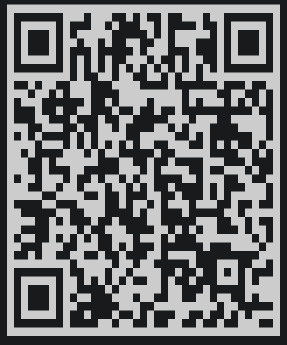
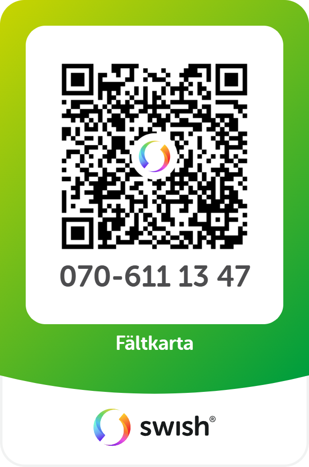

Ladda ner appen
Använd QR-koden eller knappen för att ladda ner Fältkarta.

Version för iOS är under utveckling
Vad appen gör
Fältkarta är en mobilapp för att dokumentera artobservationer direkt i fält, självklart även utan uppkoppling.
Du kan använda egna kartor eller ladda ner från t.ex. Skogsmonitor.se.
När du är färdig exporterar du direkt till Artportalen eller till din dator, utan konvertering.
Funktioner
- Enkel registrering: Snabbt formulär med artförslag. Skriv t.ex. fy och välj Fyrflikig jordstjärna.
- Egna kartor: Importera valfritt antal GeoTIFF.
- GPS: Justerbar GPS-frekvens och valfri bakgrundspositionering gör att appen behåller kontakten med satelliterna även när skärmen är släckt
- Bilder: Bilder namnges med art och tidpunkt, vilket underlättar export till Artportalen eller när du vill göra en rapport.
- Polygoner: Importera eller rita egna inventeringsområden.
Export
- Artportalen: Direkt utan konvertering
- Excel: För vidare bearbetning
- GeoJSON: För QGIS
- ZIP: Exportera en komprimerad zip-fil med karta + data + bilder och skicka den till din dator.
Extra
- Komplettera med och spara egna artförslag.
- Kort artinfo om utvalda arter.
- Vågbandad barkbock LC
På död gran. Larvgångar med skarp kant 5 mm. Ovalt kläckhål 4mm
Teknik
- Än så länge finns appen bara för Android.
- iPhone-version kommer efterhand
- WGS84 (lat/lon)
- SWEREF 99 TM
- EPSG:3857 pseudomercator
- Stöd för EPSG:3006, 3857 och 4326
Licens
- Detta projekt är licensierat under MIT License. vilket betyder:
- Varsågoda att använda min app hur ni vill. Jag tar inget ansvar för vad som händer, och ni måste tala om att det är jag som skapat den ursprungliga koden, om ni utvecklar den vidare.
Ge feedback
Kommentarer
Stöd projektet
Appen är fri från reklam. Vill du stödja utvecklingen, så bidra gärna med en frivillig gåva via Swish.

Skanna QR-koden för att donera via Swish.
Credits
- Utvecklad av: AI-agenten Codex (OpenAI)
- Styrd av: Tomas Falk
Inga kommentarer ännu.